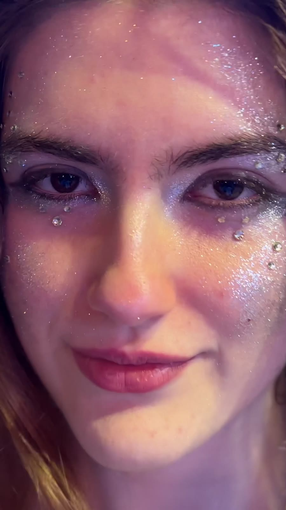
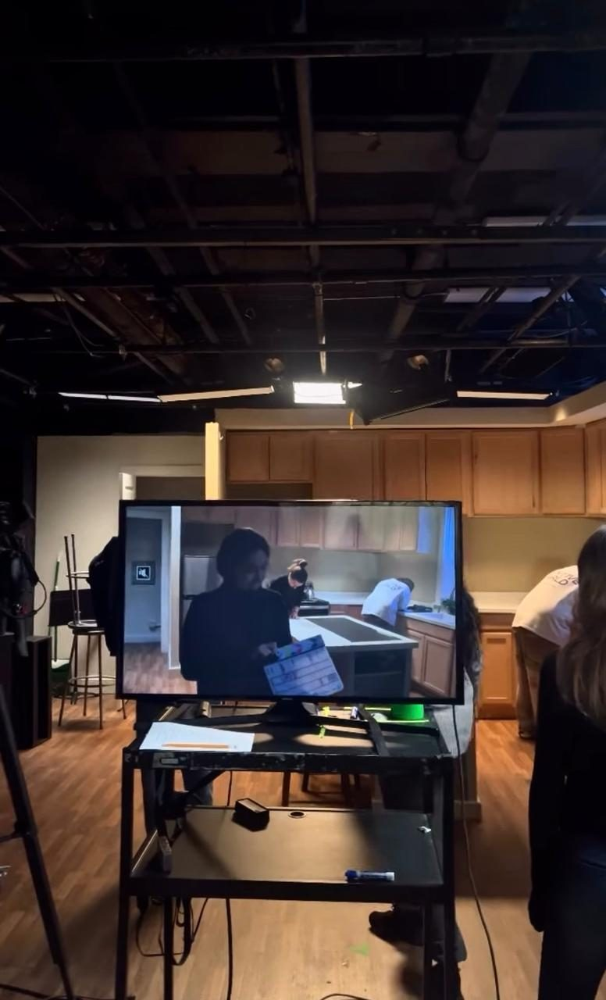

Sartori

La voz
Cantante, compositora y multiinstrumentista italo-argentina. Se forma de manera continua en medios, marketing, entretenimiento y arte, convencida de que con sus valores puede dejar una huella positiva en el mundo y en las personas.
- 9 años
Los comienzos
Inicia su formación en canto, teoría musical, composición, piano, guitarra y bajo. Desde entonces se presenta en shows como solista y en grupo.
- 16 años
Canciones propias
Consolida sus composiciones y estrena una de ellas por primera vez ante 1.000 personas en un festival.
- 19 años
Frente a cámara
Participa como conductora y cantante en un streaming.
- Hoy
Lanzamiento
Prepara el lanzamiento de sus canciones para presentarlas profesionalmente. Está por graduarse del profesorado de piano de Yamaha.
Voz e interpretación
Lírico · Pop · Jazz · Tango
Composición
Pop · Electropop · Disco · Alternativo · House
Instrumentos
Piano · Guitarra · Bajo · Ukelele
Idiomas
Español · Inglés · Italiano · Portugués · Francés
Shows en vivo
Presentaciones como solista o en grupo, con repertorio lírico, pop, jazz y tango.
Eventos privados
Bodas, aniversarios, cenas y celebraciones con un repertorio a medida.
Formato acústico
Voz acompañada por piano, guitarra o ukelele, para espacios íntimos.
Conducción
Presentación y conducción de streamings, shows y eventos, en cinco idiomas.
La escena
Estudia producción en UADE desde 2025, con formación técnica y práctica. En paralelo sumó una experiencia internacional en Nueva York, entre academias, teatros de Broadway y la oficina de medios de la ciudad.
Nueva York
- NYFACharla sobre el rol del director audiovisual
- BroadwayMasterclass de producción interna en sus obras
- Teatro independienteWorkshop sobre cómo crear una compañía
- Museo de BroadwayWorkshop de creación de un show
- Industria del espectáculoWorkshop de negocios
- AMDAMasterclass de producción de una escena de cine
- Oficina de Medios y Entretenimiento de NYCCharla sobre derechos de filmación y grabación



Organización de eventos
Planificación, proveedores, cronograma y coordinación el día del evento.
Ceremonial y protocolo
Orden, tiempos y etiqueta para eventos institucionales, sociales y de marca.
Streaming y podcast
Producción de contenidos en vivo y grabados, de la idea a la emisión.
Dirección artística
Concepto, estética y puesta en escena para shows y producciones.
Hablemos
Para shows, eventos privados o producciones, escribí directo por WhatsApp.